Project Consultant
SABInc · Philippines
Developed Laravel-based ERP systems for fleet, payroll, logistics, billing, and cheque management.
Web Developer • Communications Specialist • Consultant
I help businesses, organizations, and public-facing teams improve how they present, organize, and communicate their work through thoughtful design, development, and strategy.
About Me
I work at the intersection of web development, systems, and communication—helping businesses turn
ideas, workflows, and requirements into structured, high-performing digital solutions.
My experience spans WordPress, Shopify, and custom Laravel systems, where I’ve built and refined
websites, optimized eCommerce platforms, and developed internal tools that improve efficiency and
reduce manual work. I approach projects with both a technical and operational mindset, focusing not
just on building features, but on making them practical and sustainable.
Having worked with clients across Australia, the United States, and the United Kingdom, I’ve learned
to adapt to different standards, expectations, and business needs—delivering work that is both
technically sound and aligned with real-world use.
I’m particularly drawn to projects that require structure—cleaning up systems, improving performance,
and making things easier to understand and use. Because in most cases, the problem isn’t just what’s
missing—it’s what’s unclear.
Services
Modern WordPress, Elementor, Shopify, and landing page builds designed for usability and conversion.
Theme edits, metafields, flexible sections, schema setup, and client-editable page structures.
Laravel troubleshooting, database-backed fixes, reporting improvements, and workflow updates.
Website copy, SEO pages, brand pages, captions, proposals, and communications materials.
Portfolio
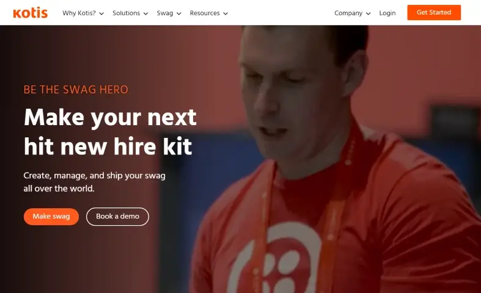
Improved structure, performance, and content workflows.
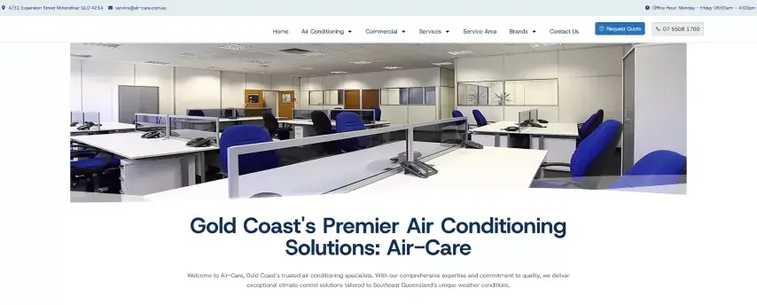
Designed and developed website pages, updated content, and supported ongoing improvements to improve service presentation and user experience.
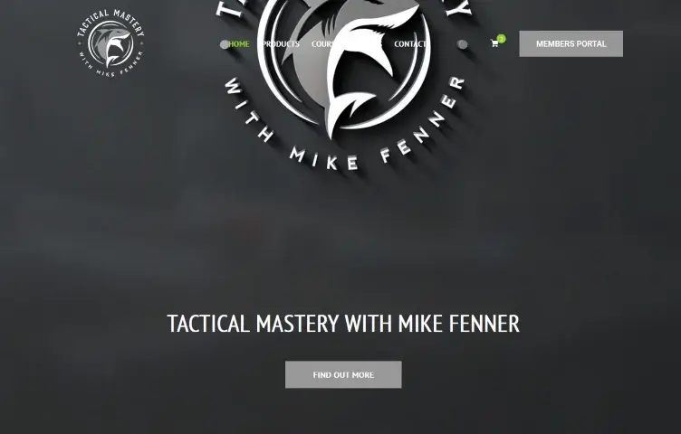
Designed pages, updated content, and improved structure.
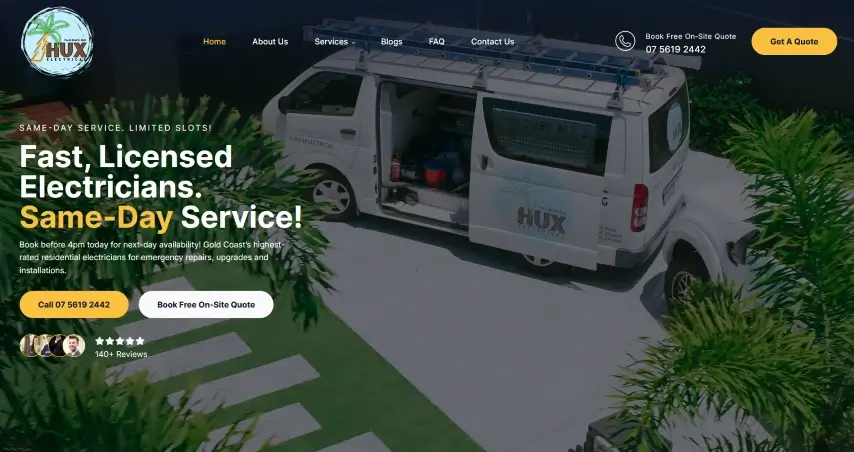
Added service pages and supported content updates.
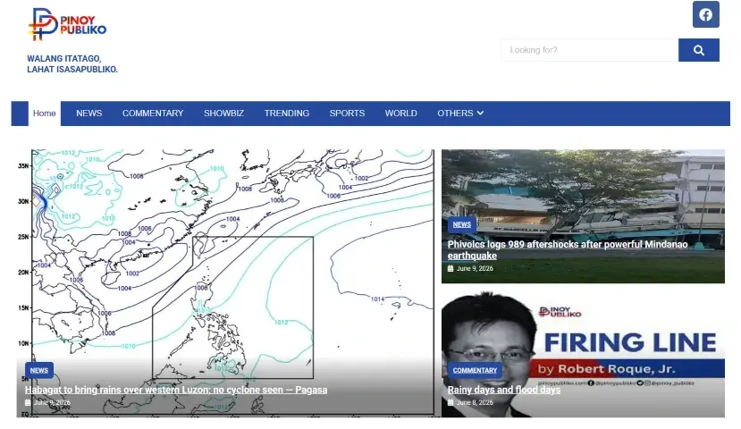
Managed updates, analytics, and content optimization.
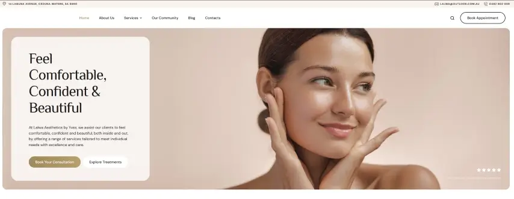
Built responsive pages with clean brand presentation.
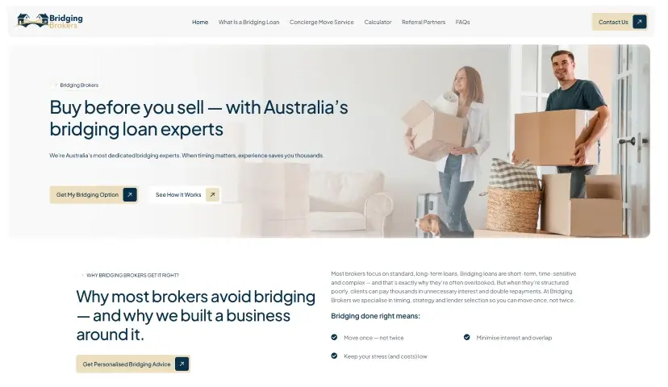
Created service-focused layouts for clarity and leads.
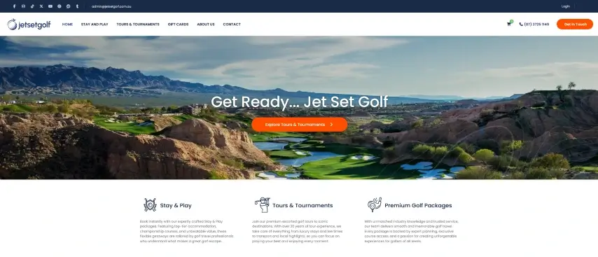
Implemented responsive layouts and front-end sections.
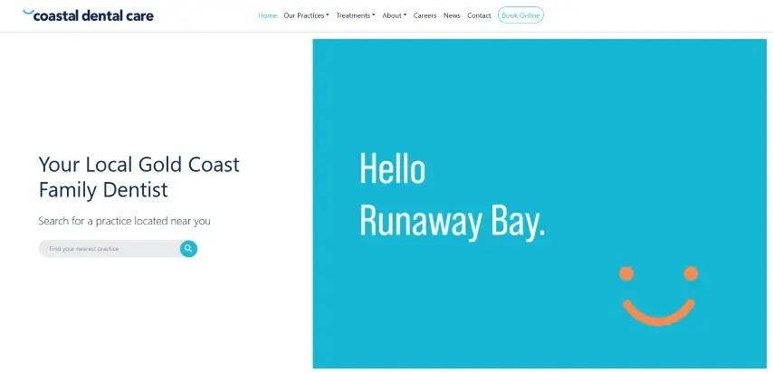
Supported updates, structure, and optimization.
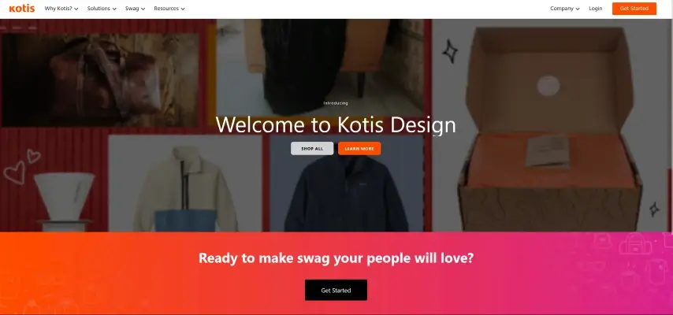
Customized storefront and product display elements.
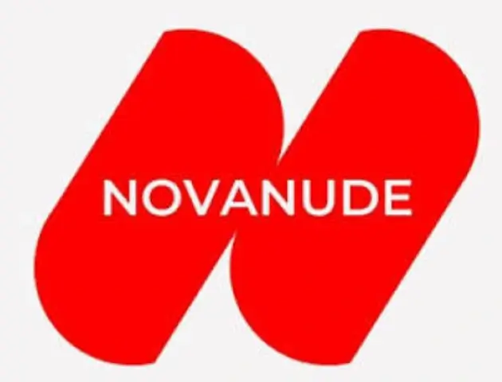
Improved speed, UX, analytics, and marketing integrations.
I can help turn ideas, systems, and services into clear, useful, and professional digital experiences.
Let’s TalkExperience
Contact
If you’re looking for someone who can handle both the technical side and the thinking behind it— websites, systems, or workflows—I’d be glad to help.
Philippines (Available for remote work)
Open to freelance, contract, and long-term projects.